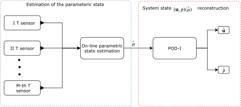
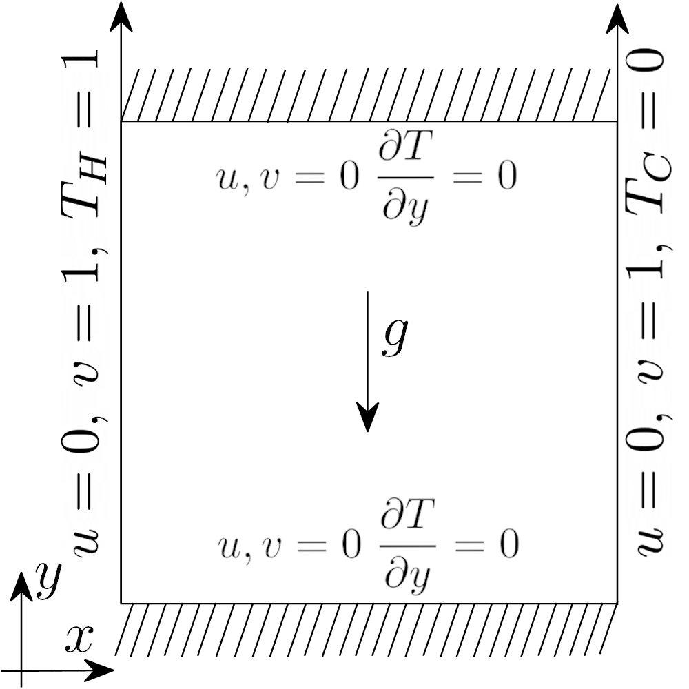

Steady Buoyant Navier-Stokes for Differentially Heated Cavity
Aim of this tutorial: learn how the indirect reconstruction algorithm (two step approach) works, combining the methods discussed in the previous tutorial. This tutorial is of particular interest for multi-physics problems with partial observations: it is legitimate to investigate the possibility that a field carries information about another field: for instance, the temperature and the velocity in a buoyancy-driven problem. Moreover, this tutorial will show how to import snapshots from OpenFOAM simulations exploiting the fluidfoam module.
{kind=link}
This two step method is based on the following steps Introini et al. (2023): at first, the characteristic parameter is estimation by solving an optimisation problem whose input are the measures of the observable field; then, the reconstruction of the unobservable field is performed by using POD with Interpolation.
The Differentially Heated Cavity is taken from the ROSE-ROM4FOAM tutorial. It’s 2D Cavity with velocity imposed at the left and right boundary, along with [Sah18].
{kind=link}
The governing equations are the Navier-Stokes with energy equation under the Boussinesq approximation
given \(\Omega\) as the domain.